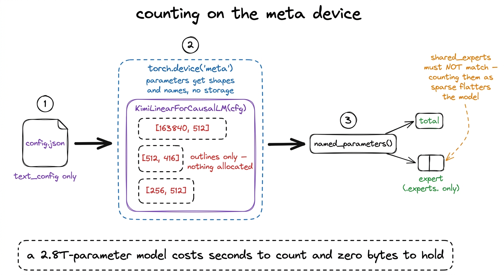
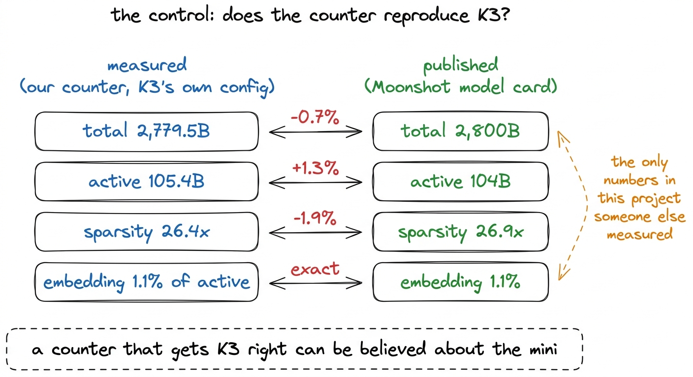
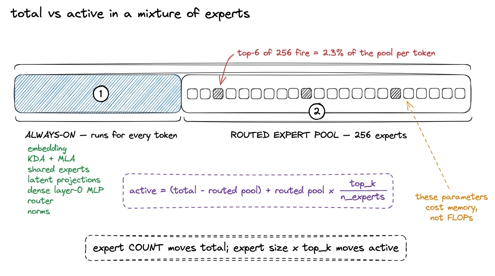
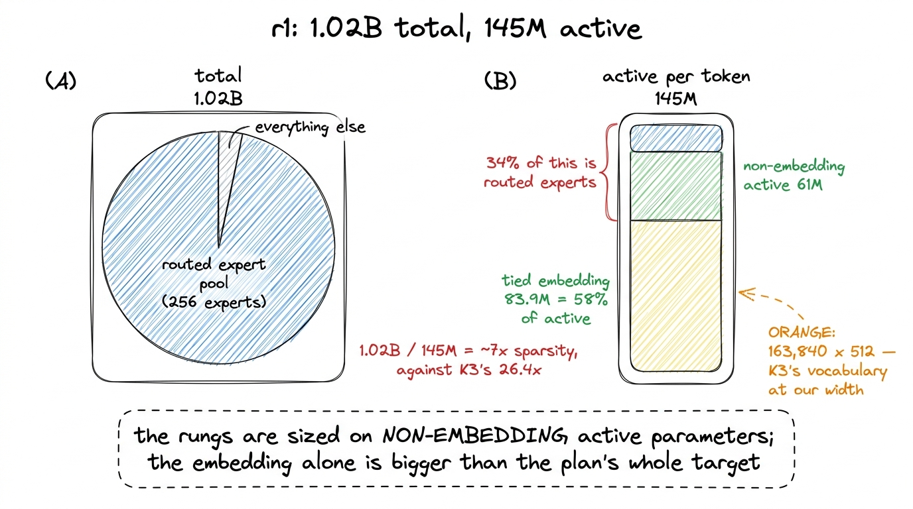
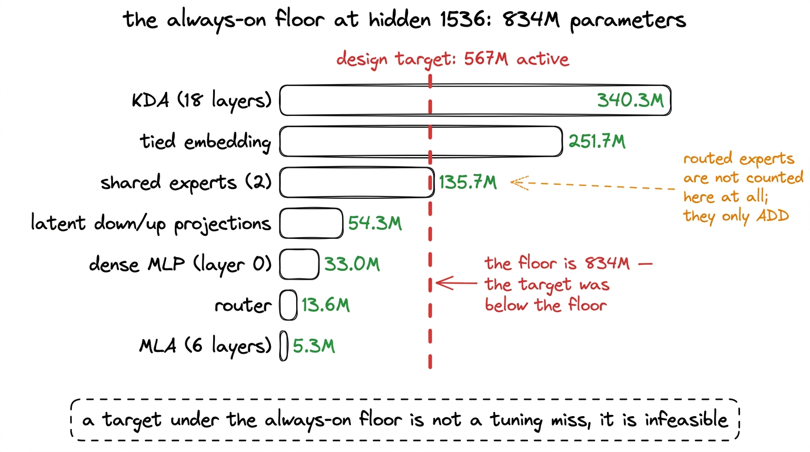
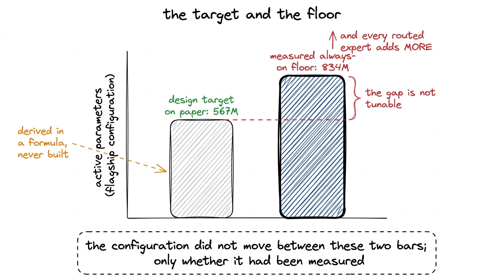

Counting the parameters, and checking the counter
A parameter counter you can only trust if it reproduces K3's own published 2.8T and 104B first, and what it says about where r1's capacity actually sits.
Every project like this one produces a handful of headline figures, and a parameter count is usually the first of them. It is also the figure least likely to be checked by anyone. A loss curve invites disagreement, a benchmark score can be re-run by a stranger, and a throughput number can be reproduced by anybody holding the same card. A parameter count arrives as a single entry in a specification table, and it is read on the assumption that whoever wrote it added correctly.
Our own plan carried such a figure. The largest model in the ladder, the flagship, was specified at 567M active parameters, and that number had been derived on paper by adding up terms in a formula. When we finally built the configuration it described and measured it, the parameters that run for every single token, before a single routed expert is counted, already came to 834M. The design target sat below the floor of the design. No setting of expert size, expert count or top_k could have reached it, because every one of those knobs only adds.
Nothing in the project had gone wrong at that point. The arithmetic had simply never been confronted with the module tree it was describing. This chapter is about the tool that confronted it, and about the control that makes the tool's output worth reading at all.
Counting a 2.8-trillion-parameter model without loading it
The method is to build the model and then not use it. PyTorch's meta device allocates parameters with shapes, dtypes and names, but with no storage behind them. A tensor on meta knows it is [163840, 512]; it holds nothing. Constructing a 2.8-trillion-parameter model on meta therefore costs a few seconds of Python and no memory at all.1 The 1.561 TB of released K3 weights, spread over 96 safetensors shards, are never touched by the counter. Only config.json is read, and only its text_config block. The counter would run identically if the weights had never been downloaded.
What we instantiate is not a re-implementation. It is Moonshot's own released modeling_kimi_linear.py, pulled off the weights volume, driven by KimiLinearConfig. That choice matters for the same reason a control matters: a counter built from our own reading of the architecture would test our reading, not the model. Counting the released module tree tests the model.
with torch.device("meta"):
model = KimiLinearForCausalLM(cfg)
total = expert = 0
for name, p in model.named_parameters():
total += p.numel()
if ".experts." in name: # routed experts only; shared_experts must not match
expert += p.numel()
active = total - expert + expert * top_k / n_expertsThe comment on the third-to-last line is load-bearing. The released code names the routed expert pool mlp.experts.* and the always-on experts mlp.shared_experts.*, and a substring test for experts matches both. Counting the two shared experts as sparse would have moved r1's active parameters down and its sparsity up, in the direction that flatters the model.

figure rendering · The counter. The released modeling code is instantiated on the meta deThe counter takes a config path and prints one row per model: total, active, sparsity, embedding share of active, and the always-on breakdown. It runs on CPU in about a minute, which is cheap enough that we re-ran it after every edit to the ladder configuration rather than only when we suspected something.2 transformers is pinned to 4.57.6 here as everywhere else in the project. >=4.56 resolves to the 5.x line, which removed transformers.utils.generic.OutputRecorder, an import the released Kimi modeling code makes at module scope. The counter fails on that import, before a single parameter has been counted.
The control
The counter's first job is not to count our model. It is to count K3.
Moonshot published two figures for the released model: 2.8 trillion total parameters and 104 billion active per token. Those are the only numbers in this project we can check our tooling against, because they are the only ones somebody else measured independently. Running the counter on K3's own config.json gives:
| measured | published | error | |
|---|---|---|---|
| total | 2,779.5B | 2,800B | -0.7% |
| active | 105.4B | 104B | +1.3% |
| sparsity | 26.4x | 26.9x | -1.9% |
| embedding share of active | 1.1% | 1.1% | exact |
Every row agrees to within 1.3%, and the residual is consistent with the published figures being rounded to two significant digits rather than with an error in the counter.3 2.8T and 104B are the numbers in Moonshot's model card. A total of 2,779.5B rounds to 2.8T without difficulty, however 105.4B rounds to 105B rather than 104B, so the active row carries a real 1.4B of disagreement. We did not chase it, and it is stated here rather than smoothed over.

figure rendering · The control. The counter is run on the released model first, against fThis agreement is the licence for the rest of the chapter. A counter validated only against the assumptions that built it is not evidence of anything; it will reproduce whatever formula was typed into it. A counter that reproduces a 2.8-trillion-parameter model it has never seen the weights of, to within 1.3%, is measuring the module tree.
What "active" means when the model is sparse
For a dense model, total and active parameters are the same number. For a mixture of experts they are not, and the gap is the reason the architecture exists at all.
Each token entering an MoE layer is routed to top_k of the n_experts in the pool. The other experts hold parameters that sit in memory and contribute nothing to that token's forward pass. So the active count is everything outside the routed pool, in full, plus the fraction top_k / n_experts of what is inside it. In r1, 6 of 256 experts fire, so 2.3% of the routed pool is active per token. K3 itself routes top-16 of 896, with two shared experts always on, which is the same shape at a different scale.
The part that is counted in full is what we came to call the always-on floor: the embedding, the KDA and MLA projections, the shared experts, the latent down- and up-projections, the dense layer-0 MLP, the router, and every norm. Nothing in that list can be skipped. It is a floor in the strict sense, because even routing a single infinitely small expert per token cannot get below it.

figure rendering · The two quantities. Total counts what is stored; active counts what aThe separation in that last line is worth stating, because the counter is what established it. Routed active parameters are per-expert size times top_k times layers, which does not depend on how many experts sit in the pool, while total parameters scale linearly with the pool. Measured at fixed expert size and top_k across 256, 384 and 512 experts, the routed share of active parameters moved from 14.6% to 14.4%. Expert count sets sparsity almost for free; it does not change what a token does. That result is what let the ladder run 256 experts against the flagship's 512 without claiming the two behave differently per token, and the chapter on the mixture of experts uses it directly.
What the counter says about r1
Run on r1's configuration from train/ladder.py, the counter returns 1.02B total, 145M active, 61M non-embedding active. The ratio of total to active is a little over 7, against K3's measured 26.4.
The gap between 7x and 26.4x is not a design failure; it is a consequence of scale meeting a fixed vocabulary. K3's embedding is 1.1% of its active parameters. At hidden 512, K3's 163,840-token vocabulary costs 163,840 x 512 = 83.9M parameters, which is 58% of r1's active count.4 The embedding is tied to the output projection in r1, so those 83.9M parameters are counted once and used twice. K3 sets tie_word_embeddings: false; untying at these widths would have added another 83.9M to a model whose entire active budget is 145M. This is one of the two deliberate deviations from K3 in the ladder, the other being 256 experts on the rungs against the flagship's 512. More than half of every token's compute goes into looking up a row of the embedding matrix and projecting back onto it, and none of it is architecture we are testing.
This is why the rungs of the ladder are sized on non-embedding active parameters rather than active parameters, and why the plan's original request for a "40M active" rung was not answerable: the embedding alone is twice that. Kaplan et al. and Chinchilla both exclude embeddings from their parameter counts for the same reason. The chapter on scaling down works through how r1's shape was chosen once that constraint was made explicit.

figure rendering · Where r1's parameters sit. The vocabulary is fixed by the tokenizer, sThe same counter, run across every rung, is what produced the ladder table the rest of the book quotes. Note that all four models hold the same ratios and differ only in scale.
| rung | hidden / layers | total | active | non-embedding active | routed share of non-emb. active |
|---|---|---|---|---|---|
| r1 (ours) | 512 / 12 | 1.02B | 145M | 61M | 34% |
| r2 | 768 / 16 | 2.93B | 307M | 176M | 35% |
| r3 | 1024 / 20 | 6.63B | 562M | 395M | 37% |
| flagship | 1536 / 24 | 35.56B | 1,237M | — | 41% |
The routed share climbing from 34% to 41% as the model widens is the embedding tax receding. At r1's width the fixed vocabulary swamps everything; by the flagship it is a minor term, and a larger fraction of each token's compute is doing the sparse work the architecture exists to do. Only r1 completed a full run, so the rest of the table is the shape of the ladder rather than a set of results.
The 834M floor
Pointed at the flagship configuration at hidden 1536 with 24 layers, the counter produced the number that reset the project's expectations. The always-on floor came to 834M parameters, broken down as KDA 340.3M, tied embedding 251.7M, shared experts 135.7M, latent projections 54.3M, dense MLP 33.0M, router 13.6M and MLA 5.3M.
The design target for that model was 567M active. The floor alone was 834M, about 47% above it. The two largest terms make the reason plain. KDA, spread over 18 of the 24 layers, is the single biggest item at 340.3M, and the tied embedding at hidden 1536 is 251.7M on its own. Neither is optional, and neither shrinks by touching the mixture of experts.

figure rendering · The always-on floor, measured on the flagship configuration. Every rouA target below the floor is a different kind of error from a target that is merely hard to hit. There is no sweep that finds it, no learning rate that rescues it, and no amount of profiling that reveals it, because the model as specified cannot exist. The flagship that was eventually launched carries 1,237M active parameters, and it was reshaped to that figure — expert count, expert width and KDA head count all moved — only after the floor had been measured. That redesign belongs to the chapter on scaling down. It is mentioned here because the same one-minute command produced the constraint, unasked, alongside the totals.

figure rendering · What one command changed. The target was set on paper and the floor waThe transferable part
Two habits come out of this, and neither is specific to mixtures of experts.
Build the control before you build the measurement. The counter's value does not come from its arithmetic, which is a loop over named_parameters() and one division. It comes from being run first on a model whose answer was published by somebody else. That step took no extra engineering, because K3's config was already on the volume and the counter already accepted a config, and it converted a script that agreed with itself into evidence. Where a published reference exists, reproducing it is the cheapest credibility available.
A quantity nobody can independently check is where errors sit undisturbed. Nothing in the project would have failed loudly because of a wrong parameter count. The model would have trained, the loss would have fallen, and every downstream figure would have been quietly mis-scaled. Model FLOPs utilisation is defined as 6 x active_parameters x tokens_per_second / peak_FLOPs, so an error in the active count propagates one-for-one into every MFU number in this book. The sustained 2.4-2.5% MFU at 27,600-28,900 tok/s we report for r1's run rests on 145M being the right numerator, as does the 5.9% measured for r1 in the benchmark harness. The Chinchilla-optimal token budget would have been computed against the wrong model as well. The chapter on MFU depends on the 145M figure; this chapter is why we believe it.
The counter has been re-run against train/ladder.py after every change to the ladder configuration since. It costs a minute. The failure it guards against is the kind that never announces itself.